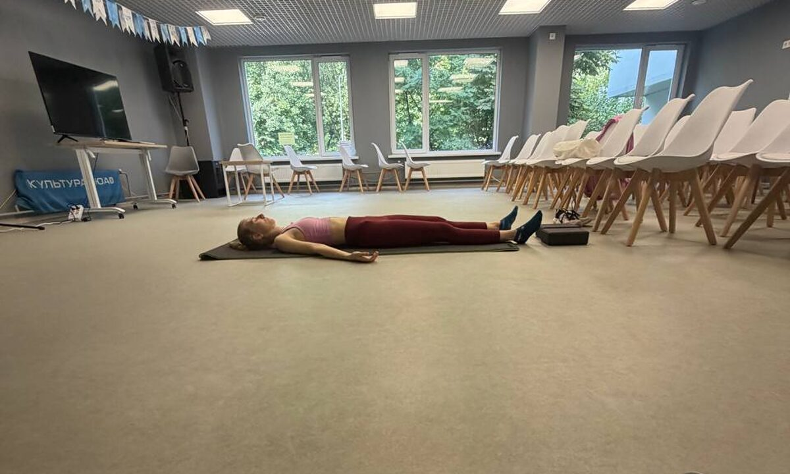
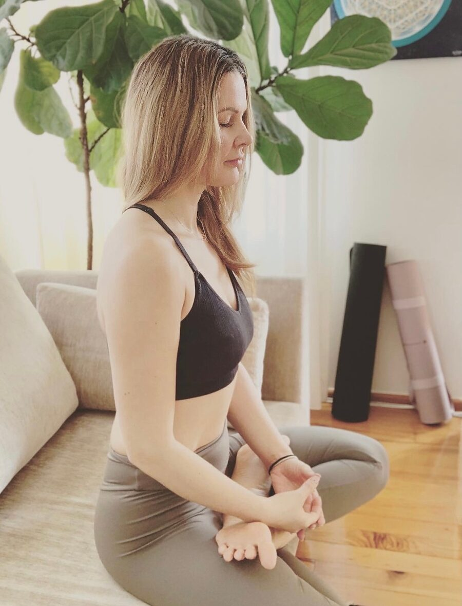
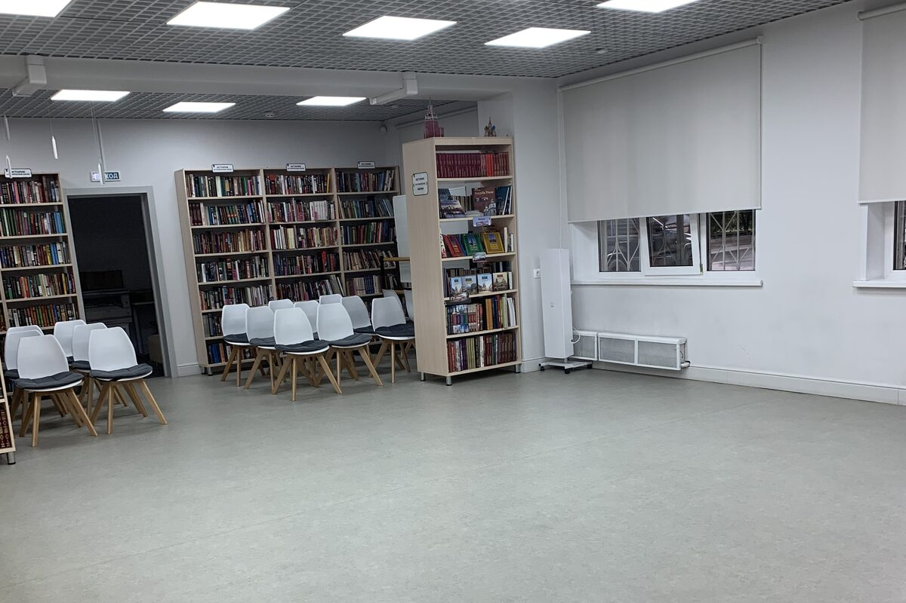
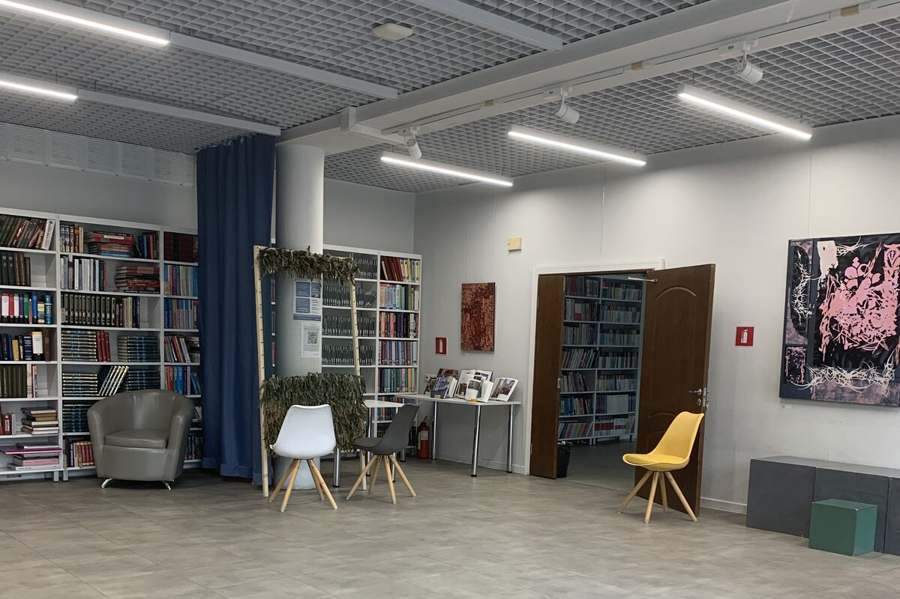
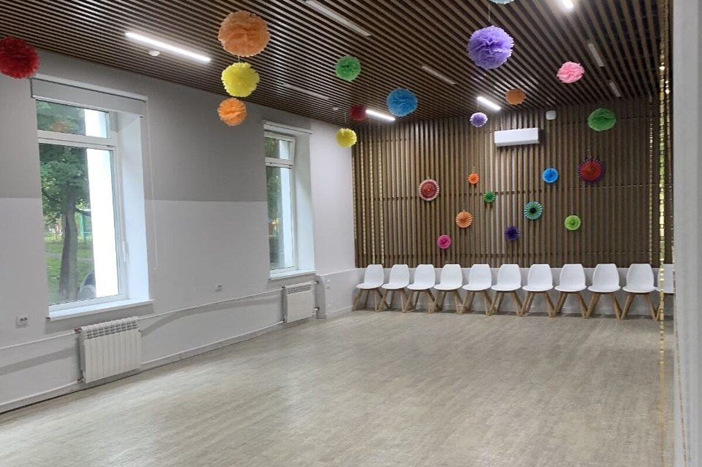
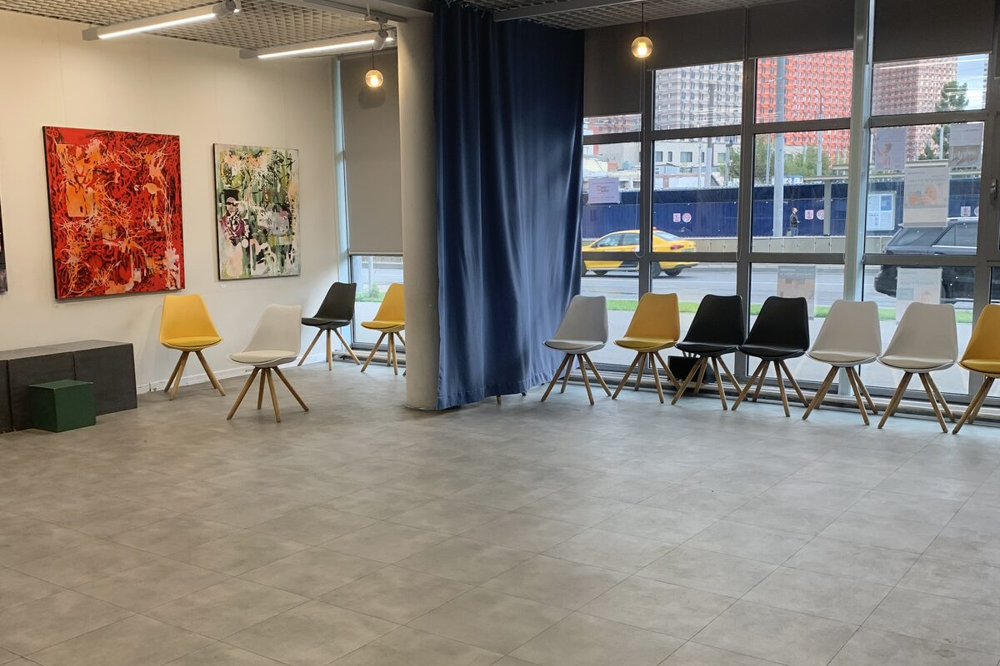
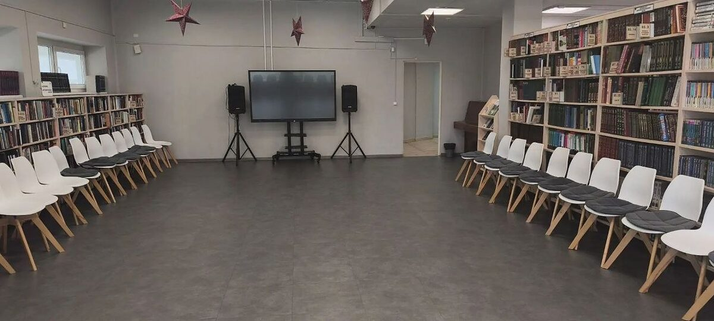
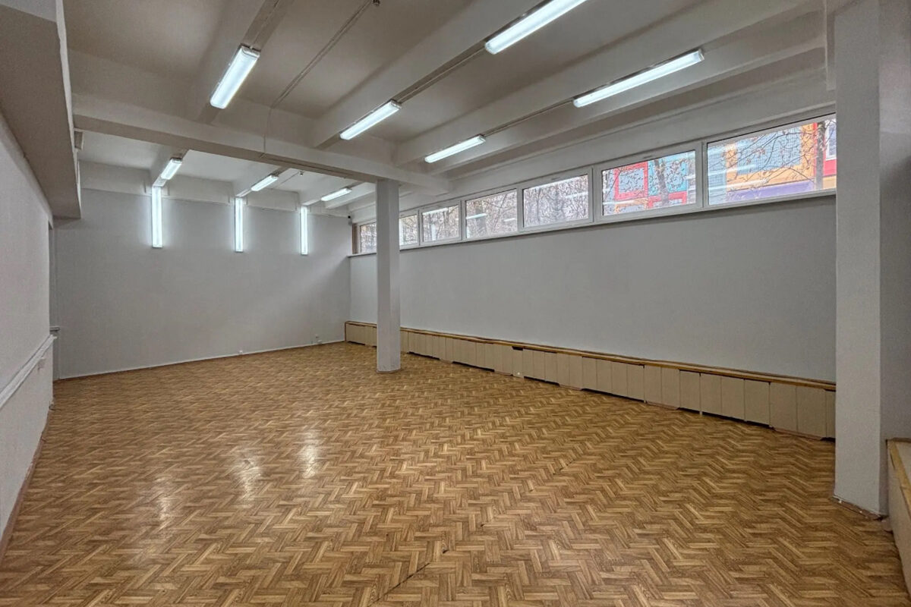

Йога-коворкинг в вашем районе
Просторные залы на базе библиотек юга Москвы — для тех, кто практикует, и для тех, кто преподаёт. Йога должна быть доступна.
Коврики и инвентарь — в зале: приходить можно налегке.

- 7залов на юге Москвы
- 6районов: Чертаново, Братеево, Зябликово, Садовники
- 0 ₽аренды и инвентаря для инструктора
Пространство для практики — в паре шагов от дома
Йога Коворкинг — сеть доступных йога-залов на базе городских библиотек юга Москвы: Чертаново, Братеево, Зябликово и Садовники. Ученики занимаются рядом с домом по доступным ценам и записываются онлайн через сервис mos.ru, инструкторы ведут группы в оборудованных залах без затрат на аренду.
-
БИБЛИОТЕКИ
Залы в библиотеках
Тёплые, просторные и тихие залы культурных центров — без суеты фитнес-клубов.
-
ЮГ МОСКВЫ
Семь площадок рядом
Чертаново, Братеево, Зябликово, Садовники. Список залов растёт.
-
ДОСТУПНО
Честная стоимость
Доступные цены для учеников и работа без аренды для инструкторов.
Если вы занимаетесь йогой
- Зал рядом с домом
С ковриками и инвентарём — приходить можно налегке.
- Профессиональные инструкторы
Преподаватели с профильным образованием и именными сертификатами.
- Доступные цены
Формат коворкинга позволяет держать стоимость ниже студийной.
- Удобная запись онлайн
Расписание и запись — через городской сервис mos.ru.

Если вы преподаёте
Аренда съедает доход, а группу приходится собирать своими силами. В коворкинге зал, инвентарь и организация — на нас.
- Оборудованный зал без аренды
Не нужно вкладываться в помещение и инвентарь.
- Гибкий график
Выбирайте удобные локации и время, масштабируйте доход.
- Администрирование на нас
Организационные вопросы берёт на себя команда.
- Реклама и аудитория
Помогаем собирать группы из жителей района.
- Официально и спокойно
Прозрачный формат работы для самозанятых.
Рядом — сообщество практикующих преподавателей: обмен опытом и профессиональный рост.
Кого мы ждём в команде
Мы отвечаем перед учениками за качество практики, поэтому у нас несколько обязательных условий.
- 01
Образование по йоге
Профильное обучение по направлению, которое вы ведёте.
- 02
Именные сертификаты
Документы, подтверждающие квалификацию.
- 03
Опыт работы с группами
Вы уже вели групповые занятия, а не только индивидуальные.
- 04
Статус самозанятого
Работаем официально — статус должен быть действующим.
- 05
Время и желание
Свободные часы в расписании и готовность вести регулярно.
Подходит? Напишите в сообщения сообщества — расскажем о свободных слотах.
Семь залов на юге Москвы
Занятия проходят в залах городских библиотек и культурных центров: просторно, тихо и в шаговой доступности от дома.






Кадры из залов сети: библиотеки и культурные центры юга Москвы.
- № 143 Детская библиотека № 143 Южное Чертаново · м. Академия Янгеля ул. Чертановская, 66к4
- № 150 Библиотека № 150 Братеево · м. Борисово ул. Борисовские Пруды, 10к5
- № 151·1 Библиотека № 151, площадка 1 Северное Чертаново · м. Чертановская мкр. Северное Чертаново, 2к207
- № 151·2 Библиотека № 151, площадка 2 Северное Чертаново · м. Чертановская ул. Чертановская, 27к2
- № 155 Библиотека № 155 Зябликово · м. Зябликово Гурьевский проезд, 15к2с2
- № 158 Детская библиотека № 158 Центральное Чертаново · м. Пражская ул. Дорожная, 20к1
- № 159 Библиотека № 159 Садовники · м. Нагатинская ул. Нагатинская, 11к1
Живёте в другом районе? Напишите нам — новые залы открываем там, где есть спрос.
С чего начать
-
УЧЕНИКУ
Три шага до первого занятия
- 01Выберите зал рядом с домом
Семь адресов на юге Москвы — список выше.
- 02Найдите занятие в расписании
Расписание — в сервисе mos.ru. Или напишите нам, поможем выбрать.
- 03Запишитесь и приходите
Коврик уже ждёт — приходить можно налегке.
- 01
-
ИНСТРУКТОРУ
Три шага до своей группы
- 01Напишите в сообщения сообщества
Коротко о себе и о том, что преподаёте.
- 02Пришлите сертификаты
И расскажите об опыте работы с группами.
- 03Согласуйте зал и график
И ведите группы в оборудованном зале.
- 01
Частые вопросы
Я никогда не занимался йогой — мне подойдёт?
Да. В расписании есть занятия для начинающих, инструктор подскажет и поможет с первых минут. Уровень группы указан в описании занятия.
Нужен ли свой коврик?
Нет, залы оборудованы инвентарём. Со своим ковриком тоже можно.
Как записаться на занятие?
Расписание и запись — онлайн через городской сервис mos.ru: выбираете зал, занятие и время. Если удобнее — напишите нам в сообщения сообщества, поможем подобрать занятие и записаться.
Почему занятия проходят в библиотеках?
Мы используем залы культурных центров: это тёплые, просторные и тихие помещения в шаговой доступности — и именно это позволяет держать цены доступными.
Я инструктор. Сколько стоит аренда зала?
Вы не платите за аренду и инвентарь — формат коворкинга устроен иначе. Напишите в сообщения сообщества, расскажем об условиях сотрудничества.
Какие документы нужны инструктору?
Профильное образование по йоге, именные сертификаты, опыт групповой работы и статус самозанятого.
В моём районе нет зала. Появится?
Возможно — залы открываются там, где есть спрос. Напишите нам свой район.